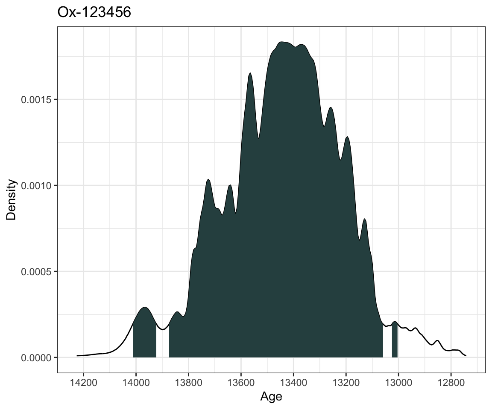
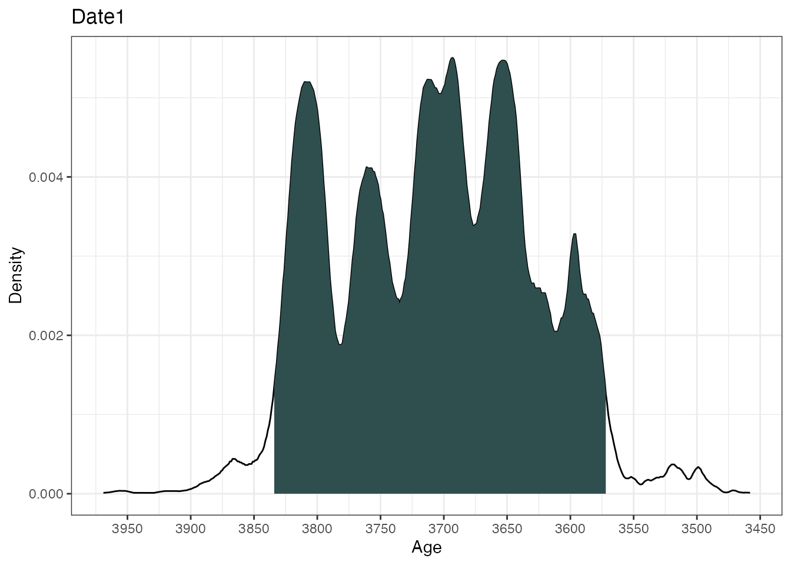
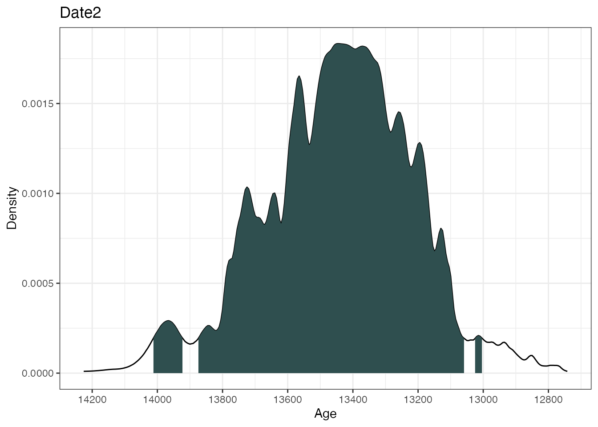
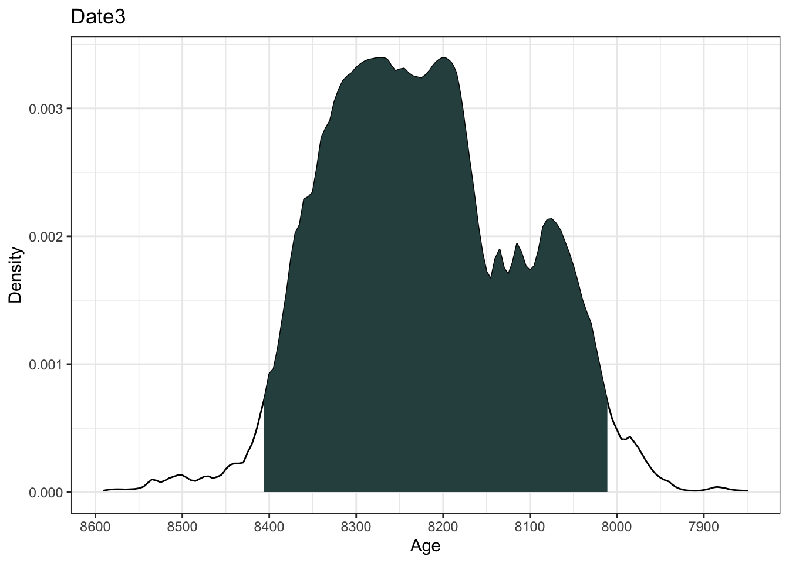
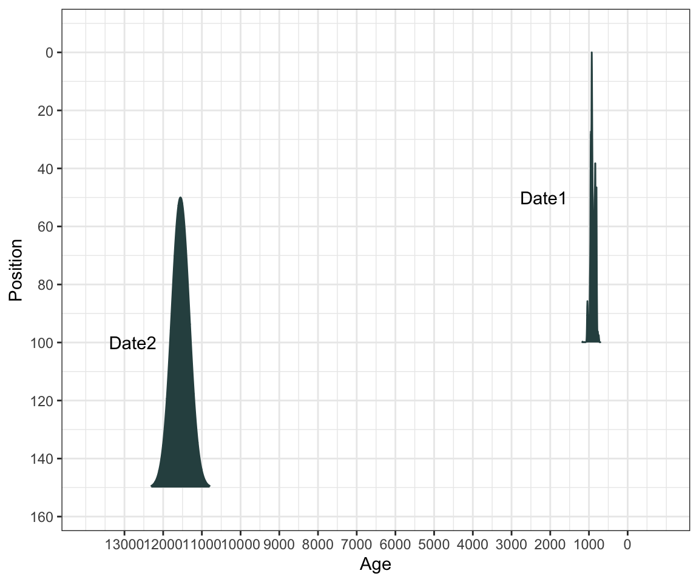
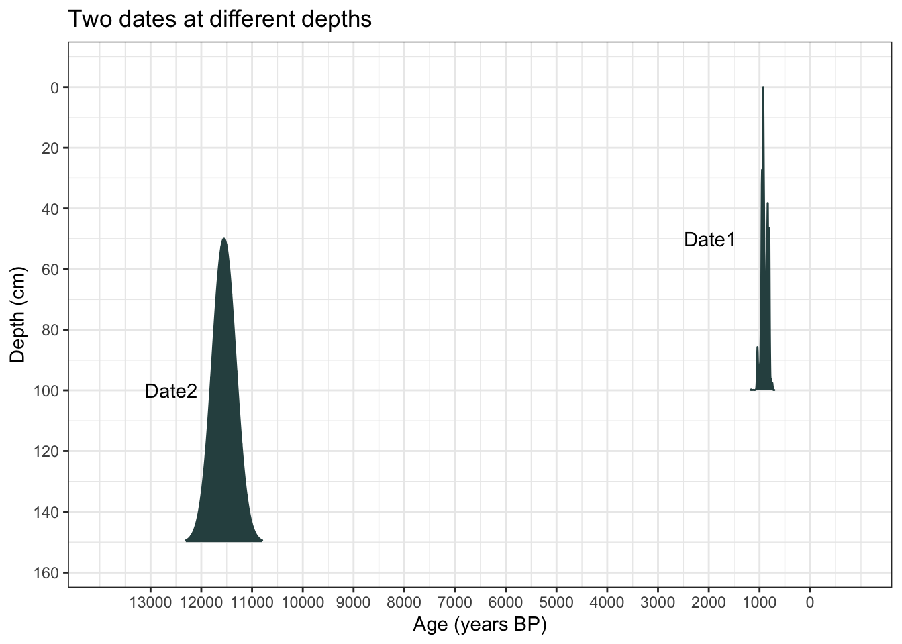
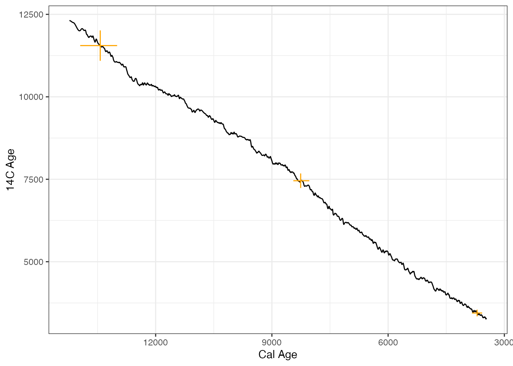
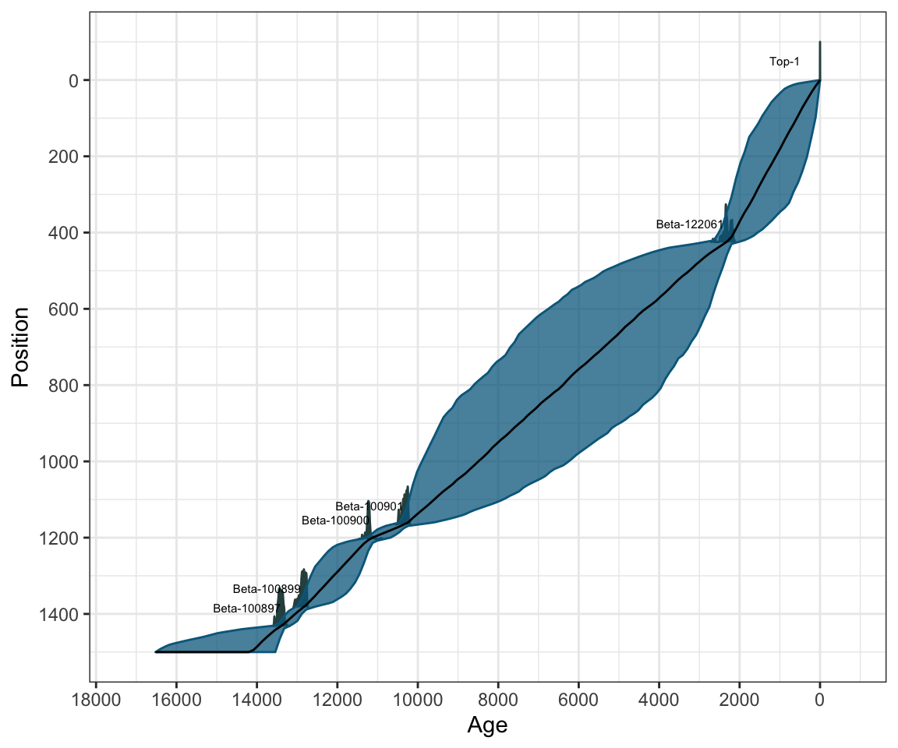
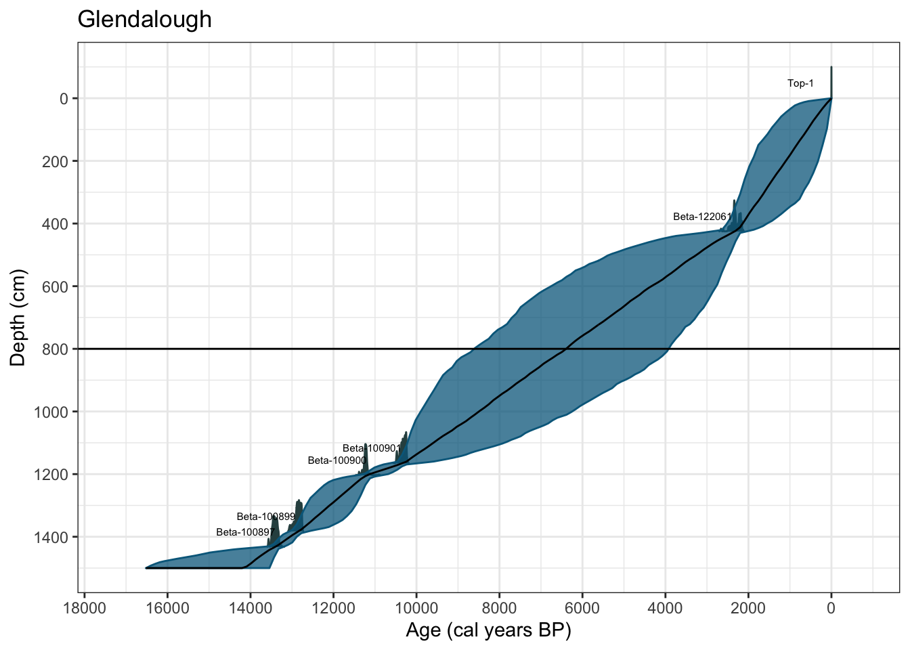
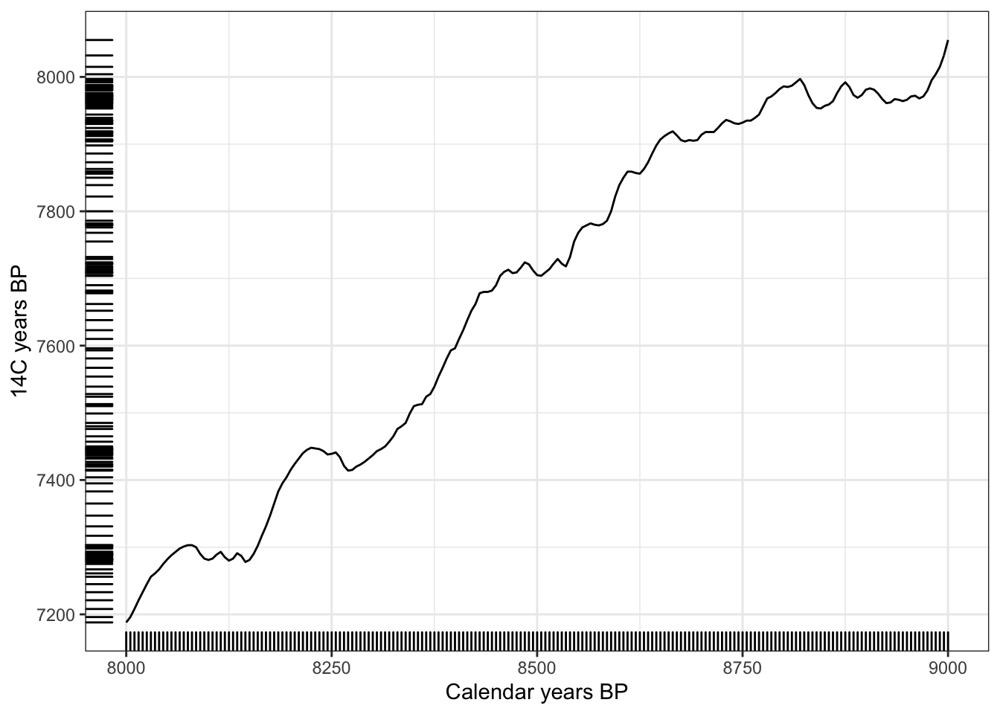

vignettes/Bchron.Rmd
Bchron.RmdBchron is an R package that enables quick calibration of radiocarbon dates under various calibration curves (including user generated ones); age-depth modelling as per the algorithm of Haslett and Parnell (2008); Relative sea level rate estimation incorporating time uncertainty in polynomial regression models (Parnell and Gehrels 2015); non-parametric phase modelling via Gaussian mixtures as a means to determine the activity of a site (and as an alternative to the Oxcal function SUM; currently unpublished), and reverse calibration of dates from calibrated into un-calibrated years.
You will find Bchron far easier to use if you know some basics on how to use R. I recommend the book by Norman Matloff amazon.co.uk link, or the online courses by Pluralsight
If you find bugs or want to suggest new features please visit the Bchron GitHub issues page.
Bchron will run in Windows, Mac OS X or Linux. To install Bchron you first need to install R. I would also recommend installing Rstudio as a nice desktop environment for using R. Once in R you can type:
install.packages('Bchron')
at the R command prompt to install Bchron. If you then type:
library(Bchron)
it will load in all the Bchron functions.
If you want to install the development version of Bchron please visit the Bchron GitHub page. The GitHub version contains a few more features but some of these can be quite untested, and occasionally this version will break when it is in the process of being updated.
Bchron will calibrate single or multiple dates under multiple (even user defined) calibration curves. By default, the intcal13, shcal13 and marine13 calibration curves are included. You can calibrate a single radiocarbon date with, e.g.
ages1 = BchronCalibrate(ages=11553, ageSds=230, calCurves='intcal13', ids='Ox-123456') summary(ages1)
## 95% Highest density regions for Ox-123456
## $`84.9%`
## [1] 12953 13863
##
## $`9.7%`
## [1] 13886 13939plot(ages1)

This will calibrate the radiocarbon age of 11,553 14C years BP with standard error 230 14C years on the intcal13 calibration curve. The id given is optional and only used for summarising and plotting. The summary command then gives the highest density regions of the calibrated date and the plot command produces a simple plot of the density, together with a shaded region for the 95% highest density region.
Bchron can calibrate multiple dates simultaneously by inputting the dates as vectors:
ages2 = BchronCalibrate(ages=c(3445,11553,7456), ageSds=c(50,230,110), calCurves=c('intcal13','intcal13','shcal13')) summary(ages2) plot(ages2)

This will calibrate three different 14C ages with the calibration curves as specified in the calCurves argument. The summary and plot commands will produce individual highest density regions and density plots for the three dates.
Finally, if you provide position information (e.g. depths) to the BchronCalibrate function it will create a plot with position on the y-axis, e.g.:
ages3 = BchronCalibrate(ages=c(1000,11553), ageSds=c(50,230), positions=c(100,150), calCurves=c('intcal13','normal')) summary(ages3)
## 95% Highest density regions for Date1
## $`77.7%`
## [1] 789 988
##
## $`16.3%`
## [1] 1030 1047
##
##
## 95% Highest density regions for Date2
## $`94.7%`
## [1] 11100 12005plot(ages3)

… or change the axes/titles if you want:
library(ggplot2) plot(ages3) + labs(x = 'Age (years BP)', y = 'Depth (cm)', title = 'Two dates at different depths')

… or change to BC/AD
If, alternatively, you want a credible interval (i.e. a single contiguous range) rather than an HDR, you could use the sampleAges function:
# First create age samples for each date age_samples = sampleAges(ages3) # Now summarise them with quantile - this gives a 95% credible interval apply(age_samples, 2, quantile, prob=c(0.025,0.975))
## Date1 Date2
## 2.5% 795 11094
## 97.5% 1036 12017The sampleAges function introduces some uncertainty as it is a simple random sample. This means that repeatedly running it will give you slightly different results. If you require precision at a yearly level, you might want to increase the n_samp argument though will slow the function down a little.
If you wanted to find each date’s median age (though this is often an inappropriate summary and should be treated with caution), use:
## Date1 Date2
## 912 11555The calibration code is very fast. On a standard PC you should have no trouble calibrating thousands of dates simultaneously without a noticeably long wait.
If you want to compare two dates, a good method is to look at the posterior difference between them. Because Bchron provides all the information about the dates through the sample_ages function, this difference can be calculated in just a few lines of code.
age_diff = age_samples[,2] - age_samples[,1] qplot(age_diff, geom = 'histogram', bins = 30, main = 'Age difference between 3445+/-50 and 11553+/-230', ylab = 'Frequency', xlab = 'Age difference')

The Bchronology function fits the age-depth model outlined by Haslett and Parnell (2008). An illustrative data set from Glendalough is provided with the package, containing 5 radiocarbon dates and a known age for the top of the core. It can be called in via:
## id ages ageSds position thickness calCurves
## 1 Top-1 0 1 0 0 normal
## 2 Beta-122061 2310 60 426 4 intcal13
## 3 Beta-100901 9150 50 1166 4 intcal13
## 4 Beta-100900 9810 60 1204 4 intcal13
## 5 Beta-100899 10940 60 1383 2 intcal13
## 6 Beta-100897 11550 60 1433 2 intcal13The top date is from the present and has the calibration curve ‘normal’ as it is not a 14C date. This core can be run through Bchron via:
GlenOut = with(Glendalough, Bchronology(ages=ages, ageSds=ageSds, calCurves=calCurves, positions=position, positionThicknesses=thickness, ids=id, predictPositions=seq(0,1500,by=10)))
There are other arguments you can supply to Bchronology, including the date the core was extracted, the outlier probabilities for each individual date, and the number of iterations for which to run the algorithm. For more details see:
help(Bchronology)
Once run, the summary commands will show various output:
summary(GlenOut)
summary(GlenOut, type='convergence')
## Convergence check (watch for too many small p-values):
## p-value
## RateMean 0.00000
## RateVar 0.00298
## Outlier 1 0.07844
## Beta-100900 0.09666
## Top-1 0.13839
## Outlier 6 0.14152
## Outlier 3 0.17407
## Outlier 2 0.21691
## Beta-122061 0.24490
## Beta-100897 0.26297
## Outlier 5 0.35450
## Beta-100899 0.40507
## Beta-100901 0.46072
## Outlier 4 0.49709summary(GlenOut, type='outliers')
## Posterior outlier probability by date:
## Date OutlierProb
## Top-1 0.006
## Beta-122061 0.008
## Beta-100901 0.009
## Beta-100900 0.013
## Beta-100899 0.009
## Beta-100897 0.010The first summary command produces ages for each position supplied in the predictPositions argument above (output not shown as it’s too long). The second provides convergence diagnostics. The third gives outlier probabilities. The plot command will produce an age-position plot:
plot(GlenOut)

Finally, the predict command will produce predicted ages for a newly specified set of positions with optional thicknesses:
predictAges = predict(GlenOut, newPositions = c(150,725,1500), newPositionThicknesses=c(5,0,20)) predictAges = predict(GlenOut, newPositions = seq(0,1500,by=10))
To run this model on a data set of your own, you will need to load in your data set via, e.g.
mydata = read.table(file='path/to/file.txt',header=TRUE)
run = Bchronology(ages=mydata[,1],ageSds=mydata[,2], ...The summary function used above also allows for calculation of sedimentation and accumulation rates. Here is an example of calculating and plotting the accumulation rate for the GlenOut object created above:
acc_rate_2 = acc_rate %>% gather(key = Percentile, value = value, -age_grid) ggplot(acc_rate_2, aes(x = age_grid, y = value, colour = Percentile)) + scale_colour_brewer(palette = 1) + geom_line() + theme_bw() + scale_x_reverse() + labs(y = 'cm per year', x = 'Age (cal years BP)')
Clearly these accumulation rates are very uncertain, which is unsurprising given the paucity of dates.
To calculate sedimentation rates, you need to either make sure that the predictPositions argument in the Bchronology call above is given with unit differences (e.g. predictPositions=seq(0,1500,by=1)) or set the argument useExisting=FALSE in the command below:
This will be quite slow as it needs to predict ages on a regular unit depth grid. However, the plots can be created in the same way:
sed_rate_2 = sed_rate %>% gather(key = Percentile, value = value, -position_grid) ggplot(sed_rate_2, aes(x = position_grid, y = value, colour = Percentile)) + scale_colour_brewer(palette = 1) + geom_line() + theme_bw() + scale_x_reverse() + labs(y = 'Years per cm', x = 'Depth (cm)')
You could then for example save this to a csv file with, e.g. write.csv(sed_rate, file = 'Glendalough_sed_rates.csv', quote=FALSE, row.names = FALSE)
Bchron contains two functions which can help with future dating strategies. They are:
Identifying the position of maximum age variance can be created with the summary command:
summary(GlenOut, type = 'max_var')
## Top 3 positions with maximum age variance are:
## 800 790 810You can control the number of positions reported with numPos. For example you could now add a line to mark the most variably layer to the plot with:
max_var = summary(GlenOut, type = 'max_var', numPos = 1)
## Position with maximum age variance is:
## 800plot(GlenOut) + labs(title = "Glendalough", x = 'Age (cal years BP)', y = 'Depth (cm)') + geom_hline(yintercept = max_var)

Finding the date which has maximum influence in the core is a more computationally intensive procedure and involves running the Bchron model repeatedly, leaving each date out in turn, and quantifying the effect on the chronology of removing each date. The function is called dateInfluence. Note that you provide this function with a full run of the Bchron model.
To find the influence, say, of date Beta-100901 as the median date shift in years when is removed, we would run:
dateInfluence(GlenOut, whichDate = 'Beta-100901', measure = 'absMedianDiff')
Alternatively, to find the influence of all the dates in terms of the median shift we could use:
dateInfluence(GlenOut, whichDate = 'all', measure = 'absMedianDiff')
A more complete measure of influence is the Kullback-Leibler (KL) divergence which takes account of the change in the full probability distribution rather than just looking at mean or median age differences when that particular date is left out. The KL divergence version could then be run using:
dateInfluence(GlenOut, whichDate = 'all', measure = 'KL')
The interpretation here is relative. The dates with the largest KL divergence values have the most influence on the chronology in the core.
The function BchronRSL will produce estimated relative sea level rates from a regression model taking into account the uncertainties in age provided by a Bchronology run as above. Two example data sets are provided:
These can be run through Bchronology and BchronRSL via:
RSLchron = with(TestChronData, Bchronology(ages = ages, ageSds = ageSds, positions = position, positionThicknesses = thickness, ids = id, calCurves = calCurves, jitterPositions = TRUE, predictPositions = TestRSLData$Depth)) RSLrun = with(TestRSLData, BchronRSL(RSLchron, RSLmean = RSL, RSLsd = Sigma, degree = 3))
The Bchronology run is as described in the section above. The BChronRSL run takes this object, an estimate of the RSL means and standard deviations, and a value of degree (here 3 indicating cubic regression). They can then be summarised and plotted via:
summary(RSLrun, type = 'RSL', age_grid = seq(0, 2000, by = 250)) plot(RSLrun, type = 'RSL') + ggtitle('Relative sea level plot') plot(RSLrun, type = 'rate') + ggtitle('Rate of RSL change') + ylab('Rate (mm per year)')
See the help files for more options, including outputting parameter values, and plots of acceleration of RSL itself.
Bchron contains two functions for running non-parametric phase models for estimating activity level in a site/region. The first, BchronDensity fits a full Bayesian Gaussian mixture model to the radiocarbon dates whilst the second BchronDensityFast fits an approximate version which will run on much larger data sets. An example run is
data(Sluggan) SlugDens = BchronDensity(ages=Sluggan$ages, ageSds=Sluggan$ageSds, calCurves=Sluggan$calCurves)
You can then output the possible start/end dates of phases:
summary(SlugDens, prob = 0.95)
The probability argument will specify the sensitivity of the algorithm to finding phases. Lower values of prob will lead to more discovered phases.
You can plot the density with:
Phases will be shown with a thick black red line. These can be turned off by setting the argument plotPhase=FALSE whilst the sensitivity can be changed with phaseProb.
BchronDensityFast is identical except for the function call:
SlugDensFast = BchronDensityFast(ages=Sluggan$ages, ageSds=Sluggan$ageSds, calCurves=Sluggan$calCurves)
The BchronDensityFast function outputs the age grid and density by default so requires no extra arguments to store it.
Bchron allows for user-defined calibration curves to be created through the function createCalCurve. If inputs to this function are:
name of the calibration curve (e.g. intcal13c)Once run, the calibration curve needs to be moved from the chosen path (by default the working directory) to the location of the other calibration curves. This is by default system.file('data',package='Bchron'). The resulting calibration curve can be used for all future runs until the package is deleted or re-installed. The calibration curve can be used by simply calling it in any other Bchron function using the supplied name. Note that no name checking is done, so it is possible to over-write the pre-defined calibration curves if the user is not careful.
We now consider an example of loading in and creating the IntCal09 calibration curve:
# Load in the calibration curve with: intcal09 = read.table(system.file('extdata/intcal09.14c', package = 'Bchron'), sep=',') # Run createCalCurve createCalCurve(name='intcal09',calAges=intcal09[,1], uncalAges=intcal09[,2],oneSigma=intcal09[,3])
The new calibration curve now needs to be moved to the Bchron package directory. You can do this with the following code:
file.copy('intcal09.rda', system.file('data',package='Bchron'))
It can then be used via its name. For example, we can now compare the calibration of a date under the intcal09 curve with that of intcal13:
age_09 = BchronCalibrate(age=15500,ageSds=150,calCurves = 'intcal09', ids='IntCal09') age_13 = BchronCalibrate(age=15500,ageSds=150,calCurves = 'intcal13', ids = 'Intcal13') library(ggplot2) plot(age_09) + geom_line(data = as.data.frame(age_13$Date1), aes(x = ageGrid, y = densities), col = 'red') + ggtitle('Intcal09 vs Intcal13')
Sometimes it is useful to turn a calendar age estimate into an uncalibrated age. This might be for simulation or model checking purposes. ‘Un-calibrating’ dates can be implemented in Bchron using the unCalibrate function. There are two versions, one where you have a single age and just want to get a quick look up of the 14C age, and another where you have the full distribution of the calibrated age and want to estimate both the 14C age and its associated error.
The simple version can be run with, e.g.:
unCal1 = unCalibrate(2350, type = 'ages')
print(unCal1)
## [1] 2346The above un-calibrates the age 2350 BP to the age 2346 14C years BP on the intcal13 calibration curve. A more advanced version would be:
unCal2 = unCalibrate(calAge = c(2350, 4750, 11440), calCurve = 'shcal13', type = 'ages')
print(unCal2)
## [1] 2388 4224 10065A fun experiment can then be run to see what the distribution of 14C ages would look like for an even distribution of calendar ages:
ageRange = seq(8000, 9000, by = 5) c14Ages = unCalibrate(ageRange, type = 'ages') load(system.file('data/intcal13.rda', package = 'Bchron')) ggplot(intcal13, aes(x = V1, y = V2)) + geom_line() + theme_bw() + scale_x_continuous(limits = range(ageRange)) + scale_y_continuous(limits = range(c14Ages)) + geom_rug(data = data.frame(c14Ages), aes(y = c14Ages), sides = 'l', inherit.aes = F) + geom_rug(data = data.frame(ageRange), aes(x = ageRange), sides = 'b', inherit.aes = F) + labs(x = 'Calendar years BP', y = '14C years BP')

Unsurprisingly the places where the calibration curve is flat (or reverses) leads to ‘clumps’ of calendar ages.
The more complicated version is run by providing it with a (preferably large) sample of ages which form a calibrated date. Such a set is created with Bchron via sampleAges, e.g.:
calAge = BchronCalibrate(ages = 11255, ageSds = 25, calCurves = 'intcal13') calSampleAges = sampleAges(calAge)
We can now uncalibrate such a set of samples
unCal = unCalibrate(calSampleAges, type = 'samples')
print(unCal)
## $mean
## [1] 11255
##
## $sd
## [1] 25This will provide a single best estimate of the mean and standard deviation of the uncalibrated (here 14C) date.
For a description of the kind of things that Bchron can do:
Parnell, A. C., Haslett, J., Allen, J. R. M., Buck, C. E., & Huntley, B. (2008). A flexible approach to assessing synchroneity of past events using Bayesian reconstructions of sedimentation history. Quaternary Science Reviews, 27(19-20), 1872–1885.
For the maths behind Bchron:
Haslett, J., & Parnell, A. (2008). A simple monotone process with application to radiocarbon-dated depth chronologies. Journal of the Royal Statistical Society: Series C (Applied Statistics), 57(4), 399–418.
For a review of chronology models:
Parnell, A. C., Buck, C. E., & Doan, T. K. (2011). A review of statistical chronology models for high-resolution, proxy-based Holocene palaeoenvironmental reconstruction. Quaternary Science Reviews, 30(21-22), 2948–2960.
For relative sea level rate estimation:
Parnell, A. C., & Gehrels, W. R. (2015). Using chronological models in late Holocene sea level reconstructions from salt marsh sediments. In: I. Shennan, B.P. Horton, and A.J. Long (eds). Handbook of Sea Level Research. Chichester: Wiley.